Chapter 25
Solutions
Solutions to Chapter 4
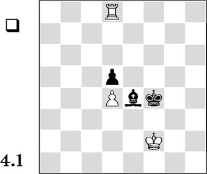
In order to win, White must conquer the d5-pawn and then push his pawn forward, to force Black to give his bishop for this pawn. An important aspect of White’s plan is that if he takes on d5, he needs to be sure that the pawn ending is winning for him. This is only possible if he forces the black king to the edge of the board.
Prior to this, White will try to play his king to the centre, in order to approach closer to the enemy pawn. There are various roads that lead to Rome. For example, the white king can walk to the c5-square via f2-e2-d2-c3-b4-c5. If then Black meets the move ♔d2-c3 with …♔f4-e3, White pins the bishop, forcing the black king to leave the e3-square again, after which he can continue his king march to c5.
1.♔e2 ♗f3+ 2.♔d3 ♗e4+ 3.♔c3 ♔e3 4.♖e8 ♔f4 5.♔b4 ♔e3 6.♔c5 ♔f4 7.♖d8 ♔f5 8.♖xd5+ ♗xd5 9.♔xd5
1-0
Another method is to cut off the black king horizontally, trying to drive it backwards. Here, White makes use of tempo play to reach e5. The following example shows the instructiveness of this method:
1.♖h8 ♗f5 2.♖h4+ ♗g4 3.♔g2 ♔g5 4.♔g3 ♗f5 5.♖h8 ♗g6 6.♖f8 ♗e4 7.♖e8 ♔f6 8.♔f4 ♗g2 9.♖a8 ♔f7 10.♔e5 ♗e4 11.♖a7+ ♔e8 12.♔e6 ♔d8 13.♔d6 ♔c8 14.♖a8+ ♔b7 15.♖g8 ♗f3 16.♖g3 ♗e4 17.♖c3 ♗g2 18.♖c5
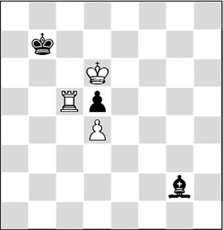
Analysis diagram
The plan has succeeded. White concludes the winning process with 19.♖xd5.
One reader, Mark Huizer, pointed out an even simpler win to me: putting the rook on e5 so that the black king cannot cross the fifth rank, then bringing the white king to c5 and ‘sacrificing’ on d5.
A sample line:
1.♖e8 ♗f5 2.♖e5 ♗e4 3.♔e2 ♗f3+ 3.♔d2 ♗e4 4.♔c3 ♔e3 5.♖e7! ♔f4 6.♔b4 ♔f5 7.♔c5 ♔f6 8.♖e5
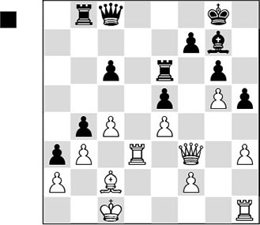
If you have concluded that Black has the better prospects, you are correct. Although the material is balanced, one piece isn’t the same as the other. Black is better because he can give his bishop a bright future on the d4-square. On the other hand, the white bishop is boxed in by its own pawns, and is therefore reduced to being an onlooker.
The black plan runs as follows:
1) The bishop is played to d4, after which he continues …c6-c5 in order to fortify the position of this piece;
2) Next, preparations are made to open the f-file with the push …f7-f6;
3) After this, Black mounts pressure on the f2- or f3-point via the f-file;
4) If all this works out, the major pieces can invade the second rank via the f-file, after which a mating attack can be organized.
In the game the various steps of this plan were carried out perfectly:
1…♗f8
Stage 1: Neutralization of the pressure along the d-file, by playing the bishop to d4.
2.♖hd1 ♗c5 3.♕e2 ♗d4 4.♔b1 c5
Stage 2: Preparation for the opening of the f-file.
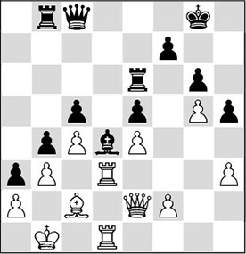
5.♖f3 ♕d8 6.h4 ♕e7 7.♖g1 ♖f8 8.♗d3 ♔h7 9.♖fg3 ♖d6 10.♖1g2 f6!
Here’s the half-time score:
White is not able to prevent Black’s concentration of troops along the f-file. In particular, the f2-point will soon be exposed.
11.gxf6
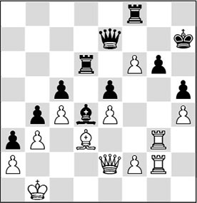
Stage 3: Exerting pressure along the f-file, or on the weak h4-pawn.
11…♖fxf6!
In the following, Black wants to increase the pressure by playing …♖f4, and therefore the g6-point has to be ‘over-protected’.
11…♖dxf6 looks more logical, but then White has a tactical trick: 12.f4! exf4 (or 12…♖xf4 13.♖xg6, and White has survived the worst) 13.♖xg6 ♖xg6 14.♕xh5+ and White wins, since 14…♖h6 fails to 15.e5+.
12.♖g5
Or 12.♖f3 ♕f8 13.♖xf6 ♖xf6, and Black has obtained the pressure along the f-file that he had in mind.
12…♕f7 13.♗c2 ♖f4 14.♖h2 ♖df6 15.♖gg2 ♗xf2

Stage 4: White’s weak point has vanished. Obviously, Black takes with the bishop, as in this way he keeps as many major pieces on the board as possible. The black pieces will invade along the f-file as from now, after which dangers will soon arise for the white king.
16.♗d1 ♗d4 17.♔c1 ♖f1
17…♗b2+ also wins: 18.♔c2 (18.♔b1 ♖f1–+) 18…♖f3 19.♕d2 ♖c3+ 20.♔b1 ♖d6!.
18.♔c2 ♖6f3 19.♕d2 ♖c3+ 20.♔b1 ♕f3 21.♖e2
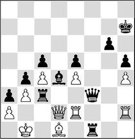
21…♖xb3+!
The final offensive. White is lost.
22.axb3 ♕xb3+ 23.♔c1 ♗b2+
0-1
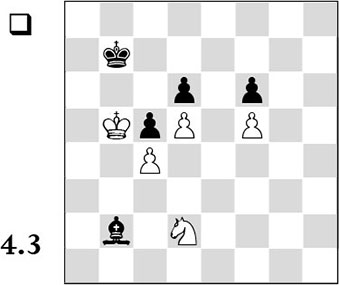
This is a typical case where the knight is superior to the bishop. The knight can stroll through the position, whereas the bishop is utterly powerless.
White must drive away the black king in order to enable his own king to walk in. The eventual goal is to conquer the c6-square for his own king, so that the pawn on d6 can be collected.
1.♘f3
Stage 1: First the black king must be driven away from the b7-square. For this purpose, the knight is played to c6, from where it threatens to go to a5 or d8. Assuming that the black bishop is on the a5-e1 diagonal to prevent ♘a5+, there follows ♘d8+ ♔c7, after which White plays ♘f7!. Then the pawn on d6 will be hanging as soon as Black again plays …♔b7, enabling White to gain ground with his king.
1…♗c3 2.♘h4 ♗d2 3.♘g6 ♗h6 4.♘e7 ♗d2 5.♘c6 ♗c3 6.♘d8+ ♔c7 7.♘f7! ♗e5 8.♔a6
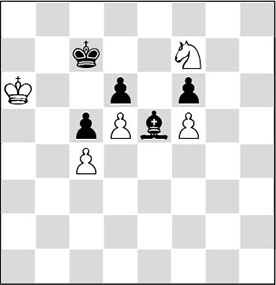
Stage 2: Now the black king must be driven away from the c7-square by playing the knight to the square b5.
8…♗f4 9.♘h8! ♗e3 10.♘g6 ♗h6 11.♘e7 ♗f4 12.♘c6 ♗e5 13.♘a7 ♗f4 14.♘b5+ ♔c8 15.♔b6 ♔d7
This is necessary, as otherwise White can immediately play 16.♔c6, which is the purpose of all his actions.
16.♔b7 ♗e5
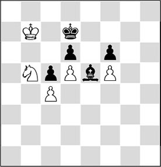
Stage 3: The black king must now be chased away from the d7-square by a check on b6 or b8. So the knight must be played to c8 or c6. Please note that White can play ♘b6+, even if the knight can be captured by the bishop there, since the resulting pawn ending is an easy win.
17.♘a7 ♗c3 18.♘c8 ♗e5 19.♘b6+ ♔e7
19…♔d8 20.♔c6 ♗g3 21.♘d7 ♔e7 22.♔c7 ♗f4 23.♘b6.
20.♔c6 ♔d8!
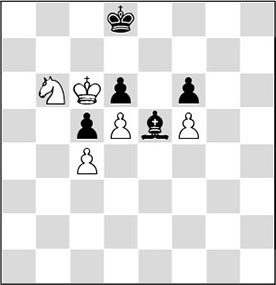
Black does not cooperate. White was ready to play 21.♘c8+, but now he still has some work to do.
Stage 4: The knight must attack the d6-pawn from the b5-square, forcing …♔e7. After that, ♔c7 can follow, ruling out …♔d8.
21.♘a8! ♗h2 22.♘c7 ♗g3 23.♘b5 ♔e7 24.♔c7
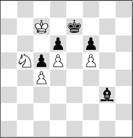
Stage 5: The black king must be driven away from the protection of the d6-pawn by means of a check on c8.
24…♗e1 25.♘a7! ♗g3 26.♘c8+ ♔e8 27.♔c6!
Of course not 27.♘xd6?? on account of 27…♔e7, winning a piece, and all White’s work would have been for nothing.
27…♔d8 28.♘xd6
And the black pawns are falling like ripe apples.
This is an example of a position that humans are much better at solving than computers. Even the strongest chess engines are not capable of giving a correct evaluation of the starting position. Only after a large number of moves have been played, according to the systematic winning plan, does the computer’s evaluation rise.
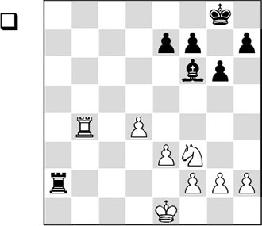
34.g4!
A typical move to gain space.
34…e6 35.♖b7
In view of what happens in the game, the question rises whether it wouldn’t have been better to play 35.g5 here: 35…♗e7 36.♖b7 ♗d6 37.h4, and White has already realized the plan for which he has to go into so much trouble later on.
35…h6 36.h4 ♖a5 37.♔f1 e5
Black takes the opportunity to trade off two more pawns, making the winning margin smaller and smaller.
38.dxe5 ♗xe5 39.♔g2
After the exchange of knight versus bishop, the resulting rook ending would be a draw.
Here and at another moment, White could have carried through his plan with g4-g5 right away. However, the question is whether the position after 39.g5 hxg5 40.hxg5 ♗c3 41.♔g2 f6!? isn’t just a draw. For example: 42.gxf6 ♗xf6, and although White has a passed pawn now, the scarcity of material might just be sufficient for Black to force a draw. By the way, in such a position, White can still try all kinds of tricks with his knight.
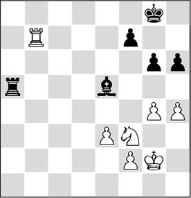
39…♗f6
Phase 1: White wants to carry through g4-g5. For this purpose, the king has to go to f4. White has to make a few preparations for this: the rook has to go to e4.
40.♖b4 ♔g7 41.♔g3 ♗e5+ 42.♔h3 ♗f6 43.♖e4
White plays systematically: he prevents …♗e5 and now makes the manoeuvre ♔h3-g3-f4 possible, after which he will be able to play g4-g5.
43…♖c5 44.♖e8
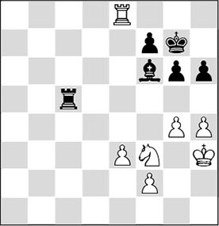
44…♖d5?!
In his analysis, Glenn Flear lets this moment pass by unnoticed, but I think Black had a better way to defend here. It is interesting to see what happens if Black does ‘nothing’: 44…♖a5 45.♔g3 ♖b5 46.♔f4. This would have to be the plan, but unfortunately the position contains a trick: 46…♗xh4! (46…♖b4+ 47.e4 ♖b5 48.g5 hxg5+ 49.hxg5, and White has carried through his plan) 47.♘xh4 g5+ 48.♔g3 gxh4+ 49.♔xh4. This rook ending should be a draw, even though White has obtained a quite favourable version.
45.♔g3 ♗d8 46.♔f4 ♗c7+ 47.♔e4 ♖a5 48.♖e7 ♖a4+ 49.♔d3 ♗d8 50.♖d7 ♗f6 51.g5
White has manoeuvred his rook to a favourable square, and now he can finally carry through his plan.
51…hxg5
Black is obliged to trade on g5, after which, granted, a pawn pair disappears from the board, but also the h-file is opened. It was hard to foresee that this will present Black with problems later on.
52.hxg5 ♗a1
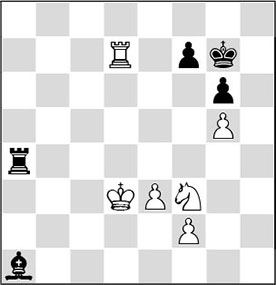
It’s still three vs two pawns on one wing, but the cooperation between White’s three pieces is superior to that between Black’s pieces.
Phase 2: A pawn has to go to f4 to give the g5-pawn ‘natural’ protection.
53.♘d2 ♖a3+ 54.♔e2 ♖a2
Please pay attention: Black is threatening 55…♗c3, when after the exchange of the minor pieces the position is a draw! In general, this exchange favours Black.
55.♔f3 ♗c3 56.♘e4 ♗b4
The bishop changes diagonals. It had to leave the long diagonal, since after 56…♗a1? 57.♘d6, Black loses the f7-pawn, and the game is decided.
57.♖b7 ♖a4 58.♘f6
Suddenly, White is threatening mate in two!
58…♗c3
For the moment, the knight cannot be maintained on f6.
59.♘e4 ♗b4 60.♖d7
Threatening 61.♖d4, with a deadly pin.
60…♖a5
60…♖a2 is met by 61.♔g4.
61.♔g4 ♖e5 62.♖d4 ♗e7 63.f4
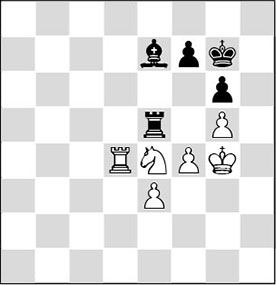
The second phase of the plan has been concluded. Phase 3: White is going to try to move his pawn from e3 to e5, to put the knight on f6, introducing mate patterns.
63…♖e6 64.♔f3 ♔f8 65.♖a4 ♖c6 66.♖a8+ ♔g7 67.♖a7 ♔f8 68.♘f2 ♖c8
Black is persevering in passive defence. 68…f6 looks to me like the only way for Black to defend. As I said before, any exchange will benefit Black. This move would also allow him to remove mate patterns from the position. After 69.gxf6 ♗xf6, it is known that a rook ending with white pawns on e5 and f4 vs a black one on g6 is drawn in principle; with an added knight versus bishop, it looks like White has substantially more winning chances, but I doubt whether the balance has actually been tipped. I should add that in a practical game, with little time, White still keeps good chances to force his opponent to his knees.
69.♘g4 ♖b8 70.♘e5 ♖c8 71.♖b7 ♖e8 72.♘d7+
Now, Black can no longer prevent the white plan.
72…♔g7 73.e4 ♖a8 74.e5
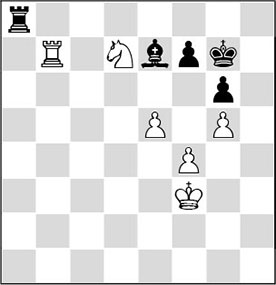
Phase 3 has been concluded. Phase 4 is to manoeuvre the knight in such a way that it can jump to f6 at the right moment, after which there will be plenty of mate patterns!
74…♖a6 75.♘f6 ♗f8
Now, the rook ending would be lost, since the white pawns are already far advanced: 75…♗xf6 76.gxf6+ ♔g8 77.♖b8+ ♔h7 78.♖f8 ♖a7 79.♔g4 ♖b7 80.e6 fxe6 81.♖e8
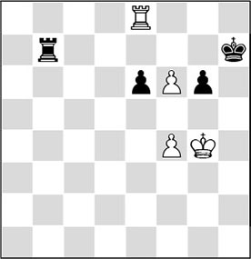
Analysis diagram
And because White threatens to force a pawn ending by 82.♖e7+, the black rook has to leave the seventh rank, after which f6-f7 decides the game. Furthermore, it is important that 81…♖f7 fails to 82.♔g5, when Black is in zugzwang: 82…♖a7 83.♖e7+ ♖xe7 84.fxe7.
76.♖b1
Now that the h-file is open, the white rook threatens to invade there.
76…♖a3+ 77.♔g4 ♗e7 78.♖h1 ♗xf6
Now, Black has to trade after all. The resulting rook ending is winning for White, since there are breakthroughs available.
79.gxf6+ ♔g8 80.♖b1 ♖a8 81.♖b7 ♖e8 82.♔g5 ♔f8 83.♔h6
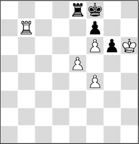
83…♖c8
On 83…♔g8, there follows 84.e6! ♖xe6 (84…fxe6 85.f7+) 85.♖b8+.
84.e6!
White liquidates into a rook ending with a passed f-pawn.
84…fxe6 85.♔xg6 ♖a8 86.♖h7 ♔g8 87.f7+ ♔f8 88.♖h8+
A fantastic achievement – beating an endgame virtuoso like Shirov in such a way.
Solutions to Chapter 5
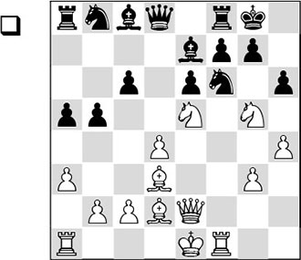
White lashed out with:
17.♖xf6! gxf6
After 17…♗xf6 18.♗h7+ ♔h8 19.♘exf7+, Black is also finished.
18.♕h5
Now that the king position has been torn apart, White invests even more material. Oddly enough, 18.♗h7+ was even stronger. After 18…♔g7, White also blasts his way through the black king’s position with 19.♘gxf7!, for instance: 19…♖xf7 20.♕g4+ ♔h8 21.♘xf7+, and too much material drops off Black’s side of the board.
18…fxg5 19.♕xh6 f5 20.♕g6+ ♔h8
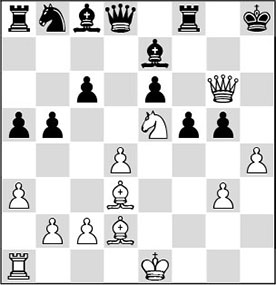
21.hxg5!
Now the threats are both 22.♔e2, followed by 23.♖h1+, and 22.♕h6+ ♔g8 23.g6, with unavoidable mate.
21…♗xa3 22.♔e2 ♕d5 23.♘f3!
And Black gave up the fight.
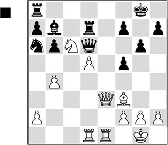
After the rather greedy
22…♘xb4?
White quickly managed to exploit the weak dark squares in the neighbourhood of the black king. 22…♘c7 should have been preferred, but also then Black would not have had much to hope for.
There followed:
23.♘e7+ ♔g7
23…♔h8 is met by 24.♕c3+ f6 25.♖e6, winning.
24.♕c3+
Here the intention of White’s 22.b4 becomes clear. Now Black cannot play 24…♕f6, as then his knight on b4 is hanging.
24…♔h6
After 24…f6 25.♖e6 ♘xd5 26.♖xd6 ♘xc3 27.♖xd7, it is all over as well.
25.♘xf5+!
A pretty sacrifice, which underlines the vulnerability of the black king.
25…gxf5 26.♖e6+!
To top it all off, a beautiful interference combination, after which Black resigned. After 26…fxe6 27.♕f6+ it is mate.
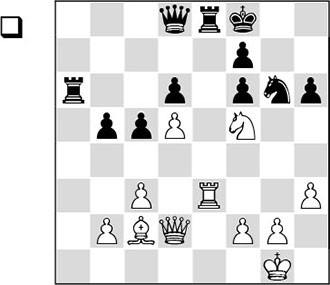
In this position there followed the exceptionally strong
30.♖e6! ♖xe6
It is clear that Black gets mated after 30…fxe6 31.♕xh6+.
31.dxe6 d5
Black cannot defend well against the combined attack of the white pieces. Perhaps, 31…♖a1+ 32.♔h2 ♔e8 was a little more tenacious, but then also, 33.♕xh6 would have been very strong.
32.♕xh6+ ♔e8 33.exf7+ ♔xf7 34.♕h7+ ♔e6 35.♕xg6
White has won material, while the black king remains unsafe. No wonder that Black’s resistance is broken fairly quickly.
35…♖a7 36.b4 cxb4
Here 36…♕b8 is objectively better, but Black is lost anyway.
37.♘d4+ ♔d7 38.♗f5+
Black resigned, as he will suffer more material losses.
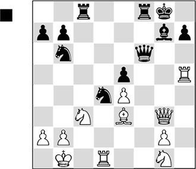
The exchange sacrifice is fully justified:
22…♖xc3! 23.bxc3 ♘a4!
But Black had to take this move into account in his decision. Obviously, the intention is to enable a queen switch to the queenside.
24.♗xd4
24.cxd4 fails to 24…♕b6+ 25.♔c2 ♕b2+ 26.♔d3 ♖c8, and the threats are too much for White to handle.
24…exd4 25.♔c2
25.cxd4 is met by 25…♕b6+ 26.♕b3+ ♕xb3+ 27.axb3 ♘c3+ 28.♔c2 ♘xd1 29.♔xd1 ♖f1+, after which the endgame won’t be too much of a problem.
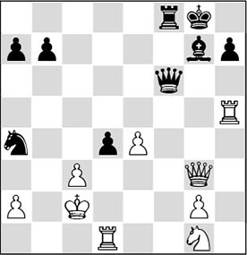
25…♕f7?!
Black neglects to reap the harvest immediately. Preferable was the multifunctional move 25…♕b6! 26.♖b1, and now the unexpected but also very attractive 26…♖f2+! 27.♕xf2 d3+, after which Black wins easily.
26.♖xd4?
With this new mistake White gives his opponent free passage. With 26.♖d5, he could have made things more difficult for his opponent. Only with ‘powerplay’ can the white king position be wrenched out of joint: 26…♘xc3 27.♖1xd4 ♘xd5 28.♖xd5 ♕f1! 29.♘f3 ♖c8+ 30.♔d2 ♔h8!, and now the bishop is also fully involved in the attack.
26…♕xa2+ 27.♔d3 ♕b1+ 28.♔d2 ♕b2+
And here the white player had seen enough.
Solutions to Chapter 6
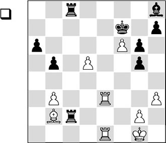
The white passed pawn on f6 is the piece that will make things happen in this position.
38.♖e7+ ♔f8
After 38…♔g8 it’s a forced mate: 39.f7+ ♔f8 40.♖e8+ ♔xf7 41.♖1e7#.
39.♖xh7 ♔g8
After 39…♖xb2 40.♖xh8+ ♔f7 41.♖xc8, White will be a rook up.
40.♖xh8+!
With this attractive combination, White manages to make optimal use of his passed pawn.
40…♔xh8 41.♖e8+! ♔h7 42.f7
And Black resigned.
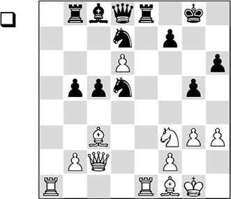
29.♘e5!
White chooses the right strategy. The pawn on d6 may become weak, but after the exchange of blockaders it can also become an attacking weapon.
29…♘b4
29…♘xe5 30.♗xe5 c4 31.♕d2! (this way White places the queen behind the passed pawn. Less good is 31.d7 ♗xd7 32.♗xb8 ♕xb8, and Black has compensation for the lost material) 31…♘b6 (31…♗e6 32.♗g2 ♘b6 33.♖a7, and the white attack gains in strength) 32.♗c3! is again the most powerful continuation. Not only does White threaten to set up a dangerous battery against the black king now with 33.♕d4, with the coming rook exchange he will also eliminate another blockading piece.
30.♕d2 ♘xe5 31.♖xe5
White wants to clear away as many blockading pieces as possible.
31…♖xe5 32.♗xe5 ♘c6 33.♕e3
Also interesting was 33.f4.
33…♘xe5 34.♕xe5 c4 35.♗g2 ♗e6 36.♖a7
Kasparov systematically places his last two pieces in position. Due to the strong passed pawn – which ties Black’s pieces hand and foot – and Black’s weakened king, Black’s collapse is imminent.
36…b4
Browne puts all his money on his own potential passed pawn. Possible was 36…♕f8, in order to protect his king position. But then White will decide the issue with his passed pawn. An essential variation is: 37.♗d5 ♗xd5 38.♕xd5 ♖d8 39.d7, and Black can prevent neither further material loss, nor White’s plan to promote his pawn.
37.♗e4!
Kasparov introduces a magnificent tactical motif into the position, which is not noticed by Browne.
37…c3
Here, 37…♗d7 was the only move, but then White would also keep the upper hand with 38.♗d5.
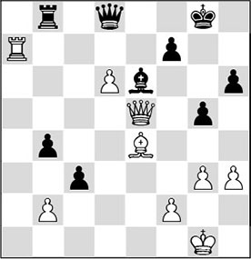
38.♗h7+!
Well-spotted.
38…♔xh7 39.♕xe6
And Black had to pack it in due to the weakness of the seventh rank.
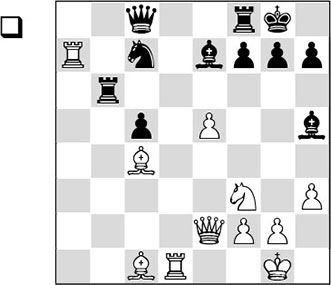
23.e6!
With this move White creates a potential passed pawn. The combination is based on a line clearance.
23…♗f6
The most tenacious continuation, but now White can set his passed pawn in motion!
On 23…fxe6 there would follow 24.♕e5! with a double attack, since both the knight on c7 and the bishop on h5 are hanging.
23…♘xe6 is out of the question in view of 24.g4! (less convincing is 24.♖xe7 on account of 24…♘d4 25.♖xd4 (25.♕e3 ♘xf3+ 26.gxf3 ♕xh3 and suddenly Black has a dangerous initiative. The threat of 27…♖g6+ can no longer be parried satisfactorily) 25…cxd4 and White has the better chances, but nothing is decided yet) 24…♗g6 25.♖xe7 with decisive material gain.
It is essential that after 23…♗d6 24.g4! ♗g6 25.exf7+ ♗xf7 (25…♔h8 26.♘e5 ♕b8 27.♘xg6+ hxg6 28.g5! ♕xa7 29.♕g4 and White has set up a mating attack) 26.♘g5! ♗xc4 27.♕xc4+ ♔h8 28.♕c2! g6 29.♗b2+ White has again built up a decisive attack on the king.
24.e7! ♖e8
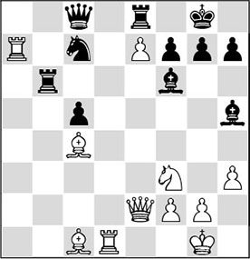
25.♖d8!+–
And this move is the apotheosis of a sharply played middlegame.
25…♖xd8 26.♖xc7!
The point of the combination. The weakness of his back rank will be Black’s downfall.
26…♕b8
26…♕xc7 27.e8♕+ ♖xe8 28.♕xe8#.
27.exd8♕+ ♕xd8
White has won a piece, and the rest was easy.
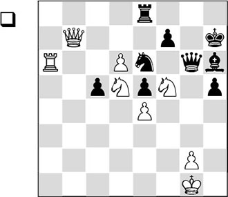
38.♕e7!!
With this highly spectacular move the white passed pawn gains decisive importance.
Less convincing were 38.d7? ♖d8, when the white pawn is quite securely blockaded, and 38.♖a7 ♗g5 39.♕xf7+ ♕xf7 40.♖xf7+ ♔g6, and the game is anything but over.
38…♖b8
Obviously, 38…♖xe7 is not possible in view of 39.dxe7 ♕g5 40.♖a1!, with which White prevents the inconveniences with …♕c1+. The pawn promotion cannot be prevented anymore. 39…f6 also fails – to 40.e8♕ ♕xe8 41.♘xf6+.
After 38…♖d8 39.d7 ♗g5 40.♕e8, the queen turns up on the other side of the pawn, after which White will be able to demolish the last remains of Black’s defences with ♖a6-c6-c8.
39.d7
Also here, a big difference with the push of the passed pawn becomes clear. The queen is on the right side of the pawn. Not only is the blockader driven away, White has also created chances against the black king himself, while his queen is a good defender of its own king as well.
39…♗f8
39…♗g7 runs into 40.♖a3!, with the deadly threat of 41.♖g3.
40.♖xe6
White opts for the most forcing winning line. Also possible was 40.♕e8.
40…♕xe6
Also hopeless was 40…♗xe7 41.♖xg6 fxg6 42.♘fxe7, for example: 42…♖d8 43.♘c6 ♖xd7 44.♘f6+.
41.d8♕
Even more convincing was 41.♕h4.
41…♖b1+ 42.♔h2 ♗xe7 43.♘dxe7
Black resigned.
Solutions to Chapter 7
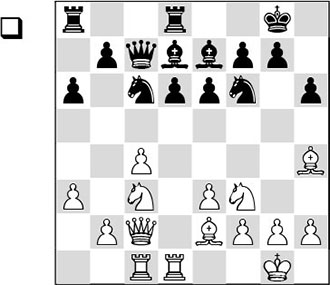
Black’s last move, 14…♗d7?, allows a small combination, with which White can damage the enemy pawn structure. In the game, the strong continuation was:
1.♘d5!
Less convincing was 1.♗xf6?! ♗xf6 2.♘d5 exd5 3.cxd5 ♕b8 4.dxc6 bxc6, and Black has counterplay.
1…exd5
After 1…♕b8, 2.♘b6! is the most unpleasant continuation for Black (also after 2.♘xe7+ ♘xe7 3.♗xf6 gxf6, Black will be left with a ruined pawn formation) 2…♖a7 3.c5 ♘d5 (3…dxc5 fails to 4.♗xf6 ♗xf6 5.♘xd7; and 3…d5 4.♗g3 e5 loses a pawn to 5.♘xd5) 4.♗xe7 ♘cxe7 5.cxd6, and Black cannot take back on d6 in view of the pin.
2.cxd5 ♕a5
After 2…♘xd5 3.♖xd5 ♗xh4 4.♘xh4 ♗e6 5.♖d2 ♖ac8, White would have the edge that he wanted. The pawn on d6 is weak, and he is left with the right pieces to put pressure on this pawn in the future.
3.dxc6 ♗xc6
After the text move, Black is stuck with a weak pawn on d6, for which he has practically no compensation at all. After 3…bxc6, 4.♗xf6 ♗xf6 will cost him a pawn, and 4…gxf6 5.♖xd6 is just as bad.
White managed to increase his advantage as follows:
4.♘d4 ♖ac8 5.♘f5 ♕e5 6.♘xe7+ ♕xe7 7.h3 g5 8.♗g3 ♘e4 9.♗h2 ♗b5 10.♕xc8 ♗xe2 11.♕f5 ♗xd1 12.♖xd1 ♔g7
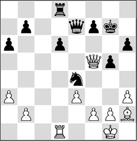
13.♖d4
This is the first sign that the white player treats the position a little too light-heartedly. 13.♕d5 was much more logical here. The square in front of the pawn is blockaded, after which White can further increase the pressure.
13…♕c7 14.g4?!
Only with the odd 14.♗f4! could White have maintained a large advantage.
14…♘c5?
Black caves in under the pressure, after which the game is immediately over.
Black had a quite curious way out of this delicate situation at his disposal: 14…♖e8 15.♖xe4 (what else?) 15…♕c1+ 16.♔g2 ♕c6, and White cannot get out of this eternal pin: 17.♔f3 (after 17.f3 ♕c2+ 18.♔g3 ♕c1, Black draws by perpetual check) 17…♖e6.
15.♗xd6!
1-0
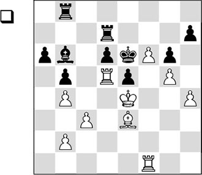
In order to make progress, White must try to open the position. In the game he considered that this was the right moment:
1.f7! ♖xf7 2.♖xd6+ ♔xd6 3.♖xf7 ♗xe3 4.♖f6+
Even though the black king would become more active than in the game, 4.♔xe3 ♔d5 5.♖xh7 would also have won here.
4…♔e7 5.♔xe3 ♖a8
White has cleverly assessed that Black does not have the slightest chance in this rook ending. The weak pawn on e5 will perish soon, while Black must grimly keep protecting his other weaknesses on a6 and h7. In the game he tried to become active, but that didn’t enable him to save the half-point either. The technical conclusion went as follows:
6.♖b6 ♔f7 7.♔e4 ♖c8 8.♔xe5 ♖c4 9.♖xa6 ♖xh4 10.♖a7+ ♔g8 11.♖c7 ♖g4 12.♔f6 ♖f4+ 13.♔e6 ♖f8 14.♖c5 ♖b8 15.♔d6
1-0
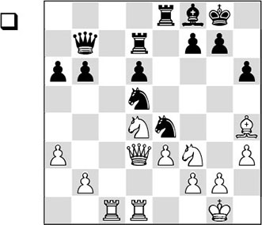
The pawn on d6 is weak, and White eagerly points his arrows at it. Before concentrating on his own plan, he must seriously reckon with the annoying threat 1…g5 2.♗g3 ♘xg3. In order to achieve a tangible advantage, White has to take control of the square in front of the weak pawn. During this process, the black knights are a thorn in White’s side, but with his next move Petrosian manages to disturb the coordination between them.
1.♘c6!
Therefore, C) is the correct continuation. Moves like 1.♖c6 do not do anything against the positional threat of 1…g5 2.♗g3 ♘xg3 3.fxg3 ♘xe3, after which Black is certainly not worse.
Another plausible idea is 1.b4, but after 1…♖c7 White’s advantage is only marginal. Now on 1…g5, White has 2.♘e2! ♘df6 3.♗g3, and he can play for square f5.
After 1.♘e2 ♘df6, Black will get round to …d6-d5, after which his position remains playable.
1…♘df6 2.♗xf6!
Petrosian was a great master when it came to exchanging the right pieces. By trading off a knight, Black loses a great deal of his activity.
2…♘xf6 3.♘b4!
The second intention behind the first move. Black cannot just give away the pawn on a6, and therefore he has to allow White to control the beautiful square d5.
3…b5 4.♘d5 ♕xd5 5.♕xd5 ♘xd5 6.♖xd5
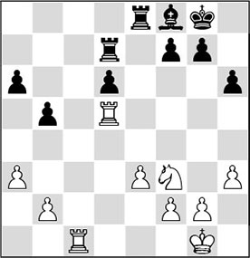
Apart from the advantage caused by the d-pawn weakness, White has obtained the advantage of good knight versus bad bishop. On top of this, he controls the open c-file, and therefore Black’s collapse will not be long delayed.
6…♖b7 7.♖c6 ♖a8 8.♘d2 g6 9.♘e4 f5 10.♘xd6 ♖d7 11.♘e4 ♖xd5 12.♘f6+ ♔f7 13.♘xd5 ♖d8 14.♖c7+ ♔e6 15.♘f4+ ♔f6 16.g4 g5 17.♘h5+ ♔e5 18.♖a7 ♔e4 19.♔g2 f4 20.♘f6+ ♔d3 21.exf4 gxf4 22.♖xa6 ♖d6 23.♖xd6+ ♗xd6 24.♘d5
1-0
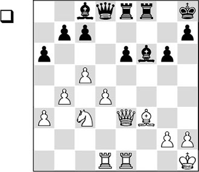
In this position, it is essential for White to get as firm a grip on square e5 as possible, keeping Black’s weak pawn fixed on e6. That is why the knight must be repositioned.
In the game White carries out the above-mentioned plan with:
1.♘e4! ♗g7
Black must not allow the exchange of his dark-squared bishop for the white knight, since then he could forget about …e6-e5 forever.
2.♘f2
The knight strives for the beautiful square e5.
2…♕e7
To the direct 2…e5, White can react in two ways:
A) 3.dxe5?! ♕e7 4.♘d3 (or 4.♖d4 ♗f5, and the pawn will again fall into ‘friendly’ hands) 4…c6 5.♗e4, and it will be quite a job to cash in on this extra pawn;
B) 3.d5! (the most promising continuation) 3…♗f5 4.♗e4, and White has a firm grip on the e4-square, and he will be able to create a strong passed pawn. Black will have to do without counterplay.
3.♘d3
But now White is in time with his knight manoeuvre, so that he keeps pulling the strings.
3…c6 4.♘e5 ♖d8 5.♘c4
The white knight dances through the black position.
5…♕h4 6.♘d6
Now that the black pieces are no longer able to support the possible pawn push …e6-e5, White is going for the win of a pawn.
6…♗h6 7.♕e5+ ♗g7 8.♕g3 ♕f4
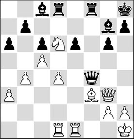
9.♖e4! ♕xg3 10.hxg3 ♖xd6
Sheer necessity, since there was no decent remedy for the white plan with ♗f3-g4, after which the pawn on e6 is doomed.
11.cxd6 ♖d8 12.♖de1 ♖xd6 13.♗g4 ♖d5 14.♗xe6 ♗xe6 15.♖xe6 ♗xd4 16.g4
And White realized his advantage on the 78th move.
Solutions to Chapter 9
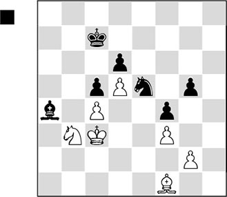
Black liquidates to an endgame of good knight versus bad bishop. He can do this because he has a good winning plan.
46…♗xb3 47.♔xb3 ♔b6
First the black king checks in on the queenside, trying to force an entry there. But Black’s actual idea is not revealed until a little later.
48.♔c3
If the white king does not budge and goes to a4, Black will play his other trump card – the plan he will also carry out in the game.
48…♘g6!
Laying his cards on the table. The knight is played via h4 and f5 to the beautiful square e3, where it will chase away the bishop, and then pawn g2 will disappear from the board.
49.♔d3 ♔a5
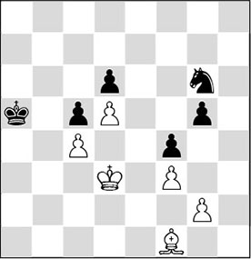
Black combines play on the kingside with play on the queenside.
50.♔c3
If White continues with 50.♔e4, Black replies 50…♘h4, putting White into zugzwang. If White then hopes for a race after 51.♗e2, Black can win without risk by walking in with his own king: 51…♔b4 (certainly not 51…♘xg2? in view of 52.♔f5, which would prove White right as his king also enters with devastating force) 52.♗f1 ♔c3 53.♗e2 ♔d2 54.♗f1 ♔e1 55.♗d3 ♔f2, and White can give up the fight.
50…♘h4 51.♔b3 ♘f5
And Black wins a pawn, after which the point will be his. Filip didn’t feel like being on the receiving end of a demonstration, of a variation like 51…♘f5 52.♗d3 ♘e3 53.♗e4 ♘xg2 54.♗d3 ♘e3 55.♗e2 ♘f5 56.♗d1 ♘d4+ 57.♔a3 ♔b6 58.♔a4 ♔a6 59.♔a3 ♔a5, when White loses by zugzwang.
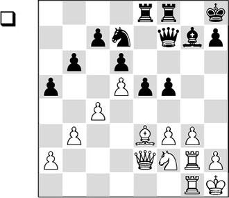
1.g4!
Thus, White succeeded in conquering the important square e4 for his pieces. Next, his plan consists of exchanging all the major pieces and occupying square e4 with the knight, and, possibly, with his king later on. In the endgame that then arises, White has excellent winning chances, which indeed he managed to convert into a win in the game. The continuation was:
1…♖g8 2.gxf5 ♕xf5 3.♘e4 ♗f6 4.♖xg8+ ♖xg8 5.♖xg8+ ♔xg8 6.♕g2+ ♔f7 7.♕g4 ♕xg4 8.fxg4 ♔g6 9.♔g2 ♗h4 10.♔h3 ♗e7 11.g5 ♗f8
After 11…♔f5 12.♘g3+, the king must go back again anyway: 12…♔g6 13.♔g4, and the knight would soon return to the beautiful square e4.
12.♔g4 h6 13.h4 h5+ 14.♔f3 ♗e7 15.♘g3 ♘f8 16.♔e4
The king and knight have traded places.
16…♘d7 17.♘e2 ♘f8 18.♘c3 ♗d8 19.♘b5 ♘h7 20.♗f2 ♘f8 21.♘a7 ♘d7 22.♗e3
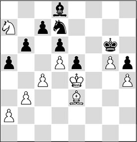
22…♘c5+
With this move Black makes it easy for his opponent. After the extremely passive 22…♘b8, White would still have to find a way to make progress. He can manage this with 23.♘c6! ♘xc6 24.dxc6 ♔f7 (bishop moves are out of the question in view of 24…♗e7 25.♗xb6) 25.♔f5, and the white king invades decisively.
23.♗xc5
Again the ending of good knight versus bad bishop has arisen.
23…bxc5 24.♘b5!
White had to take care that he didn’t make things difficult for himself. Very tempting was 24.♘c6, but after 24…♗xg5 25.hxg5 h4, Black suddenly has two dangerous passed pawns, with which he can make his opponent’s life miserable.
24…♗xg5
Black is running out of moves. He will have to sacrifice, or otherwise he has to allow the white king free passage to f5, after which he will be finished as well.
25.hxg5 ♔xg5 26.♘xc7
This is the difference with the above variation. The knight is on a much more convenient route here.
26…h4 27.♔f3 e4+ 28.♔xe4 ♔g4 29.♔e3 ♔g3 30.♘e6 h3 31.♘g5 h2 32.♘e4+ ♔g2 33.♘f2 ♔g3 34.♔e2 ♔g2
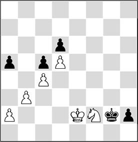
35.a4!
The decisive tempo.
35…♔g1 36.♔f3 ♔f1 37.♔g3 ♔g1 38.♘h3+ ♔h1 39.♘g5
And Black finally threw in the towel. A very pretty conclusion would have been 39.b4! axb4 40.♔f2 b3 41.♔f1 b2 42.♘f2#.
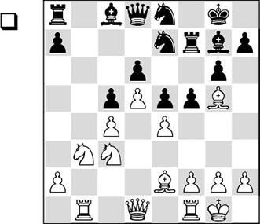
In order to take the square e4 under control, White played:
1.exf5 ♗xf5
After 1…gxf5, White’s play should also be aimed at conquering a central square. Possible is 2.f3, followed by an eventual g2-g4.
2.♗d3
Black now lent a helping hand with:
2…h6?!
Better was 2…♘f6. The text move plays into White’s hands, since he was planning to give the bishop for the knight anyway:
3.♗xe7!
Thus, White hopes to increase the pressure on f5, forcing Black to trade the light-squared bishops. In the game White realized this plan:
3…♖xe7 4.♕c2 ♖f7 5.♘e4 ♘f6
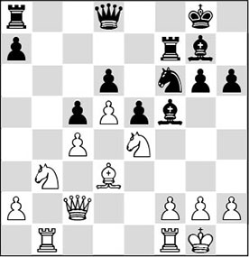
6.♘g3!
This move is the key to the entire concept.
6…♗xd3
A practical chance was offered by the pawn sacrifice 6…e4!? 7.♘xe4 ♘g4. Black has given a pawn here, but he has also created a beautiful square for his knight on e5, and in the meantime he has activated his bishop on g7. Nevertheless, White retains good winning chances.
7.♕xd3 ♔h7 8.♘d2 ♖b8 9.♖b3 ♖fb7 10.♖a3 a5 11.♘de4 ♘xe4 12.♘xe4
White has succeeded in achieving the ‘ideal position’ with good knight versus bad bishop. He converted this advantage into a full point as follows:
12…♖b4 13.g3 a4 14.h4 ♔h8 15.♔g2 ♕f8 16.♖e1 ♖8b7 17.♖e3 ♖d7 18.♖f3 ♕e8
Here, 18…♕e7 was slightly more tenacious, although in that case with 19.♕c2 White would have taken control as well.
19.♕c2
With the entertaining 19.♖f6!, White could have won right away: 19…♗xf6 20.♘xf6 ♕f7 21.♘xd7 ♕xd7 22.♕xg6, and more pawns will drop off the board.
19…♖d8
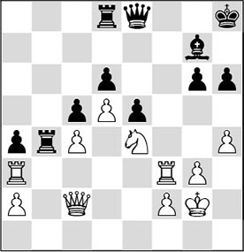
20.h5!
In this way, White further weakens the opponent’s light squares.
20…g5
Or 20…gxh5 21.♘f6 ♗xf6 22.♖xf6 ♔g7 23.♖e6, and White wins.
21.♘f6!
It is time to exchange one advantage for another. Now the white rook invades.
21…♗xf6 22.♖xf6 ♕xh5 23.♕f5 ♔g7
And Black resigned at the same time. After 23…♔g7 24.g4 ♕e8 25.♖xh6 ♔xh6 26.♖h3+ ♔g7 27.♕h7+, he will be mated.
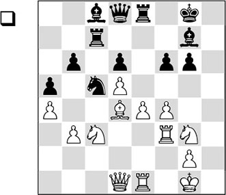
a) In the game, with 28.f5! White managed to create a strong point on e6. At the same time, the square h5 is seriously weakened, which may come in handy for White’s operations.
b) The most important part of his plan consists of playing a knight to this strong e6-square via square d4. Once on this square, the knight will support further attacking attempts. A second method for White to embarrass his opponent is by doubling on the h-file.
1.f5! g5 2.♘h5 ♖f7 3.♖g3
Even 3.♘xg7 ♖xg7 4.♖h3, with the threat of ♕h5, is highly unpleasant for Black.
3…♗d7 4.♔f2 ♕e7 5.♖ge3
Consistently continuing on the chosen path. By ‘over-protecting’ the pawn e4 White is able to reposition his pieces and thus manoeuvre his knight from c3 to e6. If he had kept an ‘open eye’ for other factors, he would undoubtedly have noticed that a quicker win was on the horizon by making use of the h-file (and the vacated square h5!). Here is a characteristic variation: 5.♖h3 ♖c8 6.♘xg7! (no dogmas: the bad bishop is an important defender and as soon as it disappears, Black will collapse due to the weakness of pawn f6) 6…♖xg7 7.♖h6 ♖f8 8.♕h5 ♖h7 9.♕g6+, and Black will succumb soon.
5…♕f8 6.♕b1 ♖fe7 7.♔g1 ♖c8 8.♕b2 ♗e8 9.♘xg7 ♖xg7 10.♘e2 ♖f7 11.♗c3 ♘d7
Black also has a strong point, but this does not nearly balance the weakness of the square e6.
12.♘d4
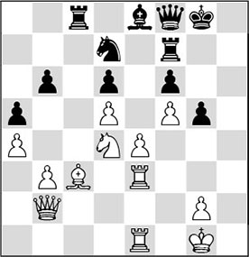
12…g4?
This eases White’s task. But also after 12…♖h7 13.♘e6 ♕f7 14.♖g3 ♖h5 15.♖ee3, followed by ♖h3, White prepares a new invasion along the h-file. The knight on e6 is an annoying obstacle for Black.
13.♖g3 ♘e5 14.♘e6
The knight has finally arrived on this beautiful square, and we will see that the consequences are terrible for the black player.
14…♕h6 15.♗xe5 dxe5 16.♕e2 ♖h7 17.♕xg4+
And Black resigned. After 17…♔f7, 18.♕g8+ ♔e7 19.♖h3 is the most convincing win.
Solutions to Chapter 10
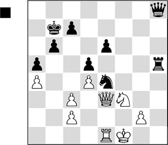
Analogously to the example in this chapter’s text part, Gligoric again falls victim to the pawn islands rule. Since White has several weak pawns, it is an impossible task for him to keep everything protected. Moreover, his king is also unsafe. In the game the first blow is dealt on the queenside.
44…♕e8!?
The queen switches to the queenside to besiege the weak brothers on a4 and c3. Due to his weak pawns, White is not able to defend adequately against this. Black could also have obtained a virtually decisive advantage with 44…♖h1+ 45.♔e2 ♖xe1+ 46.♘xe1 ♕e8, and now Black even wins a pawn.
45.♘d2
White wants to eliminate the strong knight on e4 in order to be able to attack the pawn on e6, but in doing this, he severely weakens his own king’s position.
After the passive 45.♖a1 Black has a forced win: 45…♖h1+ 46.♘g1 ♕f7+. If White now continues with 47.♔e2 ♕h5+ 48.♔f1 (48.♔d3 ♖h2-+) 48…♕f5+ 49.♔e2 ♕g4+ 50.♕f3 ♕g5 51.♖d1, we get a nice variation:
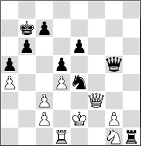
Analysis diagram
51…♘xc3+! 52.♕xc3 (52.♔f2 ♘xd1+) 52…♕xg2+. Now it is mate in all lines. For example: 53.♔e3 (53.♔d3 ♖h2–+) 53…♖h2! (the black pieces reign supreme) 54.♘f3 ♕f2+ 55.♔f4 ♖h4+ 56.♔e5 ♕g3+ 57.♔xe6 ♕g8+ 58.♔f6 ♖f4+ 59.♔e5 ♖e4+ 60.♔f6 ♖e6+ 61.♔f5 ♕g6+ 62.♔f4 ♖e4#.
45…♘xd2+
Also after 45…♖h1+ 46.♔e2 ♖h4! 47.♔d1 ♕xa4, it is game over.
46.♕xd2 ♕xa4 47.♖xe6
47…♕a1+
It seems logical to attack the white king from the queenside. But possibly, there was a more convincing way to stage a mating attack: 47…♕d7! 48.♖e1 (the queen ending after 48.♖h6 ♕f5+ 49.♔e1 ♖xh6 50.♕xh6 ♕xc2 would not allow White to cherish any illusions either) 48…♖h1+ 49.♔f2 ♕f5+ 50.♔e2 ♕g4+ 51.♔f2 ♕h4+ 52.♔e2 ♕h5+ 53.♔f2 ♖xe1 54.♕xe1 (54.♔xe1 a4-+) 54…♕f5+, and White can forget about the rest.
48.♔f2 ♖h1
Here also, the disadvantage of the greater number of pawn islands has led to a direct mating attack by the opposing side. In order to avoid being mated, White must give up a few pawns.
49.♕g5
The pawn ending after 49.♖e1 ♖xe1 50.♕xe1 ♕xe1+ (50…♕b2-+) 51.♔xe1 is lost after 51…♔c6. But also after 49.♔g3 a4 50.♕d3 ♕g1, White is in bad shape.
49…♖f1+ 50.♔g3 ♕xc3+ 51.♕e3 ♕xc2 52.♖e5 ♖d1
0-1
White must not think ‘static’ by continuing with, for instance, 23.c3 followed by 24.♔d4. In that case he will not make any real progress. With his next move White intends to attack the black pawn structure with c2-c4, at the same time hoping to get rid of his own doubled pawn.
23.b3! a6 24.c4 dxc4
Perhaps there was no immediate need for Black to exchange on c4, but sooner or later it would come to this anyway.
25.bxc4 ♗c6 26.g3 ♖d8 27.♗e4!
The correct continuation. White trades off two of his opponent’s active pieces, and intends to fix the weak pawn on e6 by occupying the square e5 with his king.
27…♗xe4 28.♖xd8 ♔xd8 29.♔xe4 ♔e7 30.♖d1 ♖f8 31.c5
31…♖c8
With the text move Black actually resigns himself to the loss of a pawn, since he cannot sit and watch forever. The threat of ♖d1-d6-b6 is starting to become acute. After 31…♖d8? the pawn ending is won for White: 32.♖xd8 ♔xd8. Now a possible line is: 33.♔e5 ♔d7 34.g4 ♔e7 35.h4 ♔d7 (or 35…g6 36.h5 gxh5 37.gxh5, and Black runs out of moves) 36.h5 ♔e7 37.g5 ♔d7 38.gxh6 gxh6 39.♔f6.
32.♖d6 ♖c7
A crucial variation arises after 32…a5!? 33.♖b6 axb4 34.♖xb7+ ♔f6 35.♔d4 ♖d8+ 36.♔c4 ♖d2 37.♖xb4 ♖xh2 (material is equal, but the strong c-pawn should decide) 38.c6 ♖c2+ (Black is just too late: 38…♔e7 39.♔c5 ♖c2+ 40.♔b6 ♔d8 41.♔b7!+–) 39.♔b5 g5 40.fxg5+ hxg5 41.♔b6, and White should win.
33.♔e5 a5 34.♖xe6+ ♔f7 35.♖b6!
The first catch is made. Now any possible counterchances must be minimalized.
35…axb4 36.♔d5 b3 37.♖xb3 ♔f6
37…h5 38.♖b6!.
38.g4!
Nunn prevents the black king from entering, and now he can drive it back.
38…♖d7+ 39.♔c4 ♖e7 40.♖b6+ ♔f7 41.♔b5 ♔e8 42.f5
Black has no counterplay and White is systematically preparing the creation of a passed pawn.
42…♔d8 43.♖e6 ♖d7 44.♔b6 ♖d2
There is no salvation anymore: 44…♖f7 45.♖g6 h5 46.g5 ♖xf5 47.♖xg7 h4 48.g6+–.
45.♔xb7 ♖xh2 46.♖g6 h5 47.gxh5 ♖xh5 48.c6
1-0
White strives for a blockade of the black pawn structure, and he starts his manoeuvre with the following pointed move:
22.♘b4!
Now 23.♘d5 is threatened, with a large positional plus. Also 22.♘e3!? came into consideration, although the knight is in the way of the rook on e2: 22…d5 (after 22…♖d7 23.c4, the d5-square is fixed, and White will get what he wants. Nonsensical would be 22…♗xa2 23.♘g4 ♘xg4 24.♗xd8 ♕xd8 25.♕xd8 ♖xd8 26.hxg4 ♗b3 27.♗d5+ ♗xd5 28.♖xd5, with a technically winning endgame for White) 23.♗g4!, and White is clearly better.
22…d5?!
Or, for example, 22…♖d7 23.♘d5 ♘xd5 24.♗xd5 ♗xd5 25.♖xd5, and White controls the beautiful light squares. In the game Black wants to prevent this blockade, but this brings him from bad to worse.
23.♕g3!
Here it becomes clear why the knight is so well placed on b4. Black must give up an important pawn.
23…♕f7 24.♖xe5
Now that a centre pawn has fallen, the race is run. In despair, Black played:
24…d4 25.cxd4 ♔h8 26.d5 ♗f5 27.d6 ♖d7 28.♘d5 ♘g8 29.♖e2 h6 30.♗f4 ♖fd8 31.♘b6 g5 32.♗e5 ♘f6 33.♗c3 ♔h7 34.♘xd7 ♖xd7 35.a3 ♗g6 36.♖de1 ♗f8 37.♖e6
Black resigned.
Yes, there certainly is counterplay for Black. If you have sensed that the position holds a combination, you have hit the bull’s eye.
25…♖xf3!
Although the strategic drawbacks of the black position are undeniable, he can bring his major pieces to life exactly on time.
26.gxf3?
White misses the best defence, which consisted of 26.c4, and even though Black is a pawn up, it is not easy for him to attack White’s solid formation. Nonetheless, after 26…♖f5 27.♖f1 (also after 27.♘b6 ♖c7 28.♘d5 ♖cf7 29.♖ac1, Black has a large advantage) 27…♖d8 28.♘c7 ♕f7 29.♖xf5 ♗xf5 30.♖f1 ♖d7 (incorrect is 30…♕xc7? 31.♗b6 ♕d7 32.♗xd8, and suddenly it is White who is virtually winning) 31.♘d5 ♕e6, Black will be able to play for a win at his leisure.
26…♖xc2 27.♖g1
No solution is offered by 27.♕xc2 ♕xc2, and because of, among other things, the lack of coordination between the white pieces, his position collapses.
Furthermore, it is important that 27.♘f6+ is met by 27…♔f7!.
27…♕f5! 28.♖xg7+
White tries to prolong the struggle a little, realizing that after 28.♕d1 Black can give mate with 28…♖xh2+!.
28…♔xg7 29.♕d1 ♕g6!
But after this move, further resistance is futile. If White wants to cover the mate on g2 with his queen, he will have to let go of the knight on d5. Therefore, White resigned.
Solutions to Chapter 11
After
29.♘d2?
Black played the strong
29…♘e5!
and now White is threatened with the loss of the important pawn on d4. Out of necessity he played:
30.d5
Conceding some important central squares.
30…♘xd3 31.dxe6 ♘e5?!
For his part, Black does not react all too cleverly either. With 31…♘b2!? 32.e7 ♖e8 33.♖b1 ♘d3, he could have gained a healthy pawn.
32.exf7?
The game remains an orgy of mistakes. With a sneaky trick, White could have done himself a good turn: 32.♘f1! ♖e8 (clearly, 32…♖xd1? fails to 33.e7) 33.exf7, and Black’s advantage is kept within bounds.
32…♘xf7 33.♔f2 ♖d3
As White realized that his position was ruined, he resigned.
If you have chosen D), you have selected the most promising continuation. Now that White’s central set-up is fully stable, he can attack on the flank without restraint. The only thing he should reckon with is the black flank action …b5-b4. However, this will come too late, since after g2-g4 White already has a few dangerous threats.
The plan under A) looks nice superficially, but White will not accomplish much against Black’s solid central set-up, whereas Black is not without counterplay on the queenside following …b5-b4.
It looks senseless for White to first castle himself, as suggested under B), and only then to start with a flank attack.
Even more risky, and therefore not recommendable, is queenside castling, as under C), since Black will be able to operate against the white king with …♕d8-a5 and …b5-b4.
14.g4 g6
If Black searches for counterplay with 14…b4?!, he will be quickly counted out after 15.g5 ♘e4 16.f3 bxc3 17.bxc3 ♕a5 18.0-0!♕xc3 19.♖ac1, and Black will get no compensation for the piece he loses.
15.♗d1!
Better than the immediate 15.g5, since that would be met by 15…♘h5. Now 16.g5 ♘e4 17.♘xf7! ♔xf7 18.♕xh7+ ♔f8 19.♗e5 is threatened.
15…♗f8
Also here it is interesting to investigate if there is any counterplay to be found for Black. After both 15…♕a5 and 15…b4, White will carry out his threat of 16.g5, followed by ♘xf7!.
16.♗g5 ♗e7
Forced, since 16…♗g7 17.♕h4 is extremely unpleasant for Black.
17.♕f3 b4 18.cxb4
Also strong is 18.♗a4!? ♖f8 19.♗xf6 (not 19.♗h6? bxc3 20.bxc3 ♕a5 21.♗xf8 ♖xf8, and Black has nice compensation for the exchange) 19…♗xf6 20.♘d7, and again White wins material, without Black getting anything in return.
18…♗xb4+ 19.♔f1 ♗e7 20.♔g2 ♖b8 21.♗a4! ♖f8 22.♗h6
Winning the exchange, which decides the battle in a higher sense. On move 38 White cashed in the point.

The correct answer is B). Answer C) is pretty bad, as White will then have a free hand on the kingside.
Answer A); to continue with 15…exf5 16.exf5, has the chief drawback that the white bishop on d3 is activated, and this weighs more heavily than the opening of the diagonal of Black’s bishop on b7. In that case White will be ready for 17.♗h6, followed by ♘g5, creating problems for Black along the f-file.
However, the white player had hardly reckoned with:
15…gxf5!
It appears that Black is weakening his king position, but this turns out not to be so bad. His strong pawn centre, combined with the open g-file and the a8-h1 diagonal, definitely weigh up against this concession.
16.exf5?!
After this swap, White definitely has a big problem. He would have done better to maintain the tension in the centre by continuing with 16.♗h6.
16…e5!
This move is essential. The white pawn on f5 is quite in the way of White’s actions.
17.♗e2 d5 18.♗h6
A logical move, but just the one Black was waiting for.
With 18.♕g3!? White could have tried to create complications. Only with 18…♔f8! can Black obtain an advantage in that case. 18…d4, for instance, fails to 19.♘xd4, in view of the pin. A possible variation is 19.♔h1 ♖ac8, and now the black pawn centre will roll on irresistibly.
18…♗xh6 19.♕xh6 ♕c5+ 20.♔h1 ♕f8
There was also nothing against setting the pawn centre in motion with 20…d4.
21.♕xf8+?
After the queen exchange, the game is decided in a higher sense. White should have tried to fish in troubled waters with 21.♕h4.
21…♔xf8 22.♗d1 ♖ac8 23.♘g5 ♘c5 24.b4
This is an enormous weakening, but otherwise White will lose a pawn.
24…♘cd7 25.♘a2 h6 26.♘h3 d4 27.♔g1 ♗d5 28.♘c1 ♖c4
And White had seen enough: 0-1.
A) The idea to trade off a blockading piece is not so bad in itself. Nevertheless, White will make no progress after, for instance, 1.♖xf8 ♖xf8 2.h4 ♔d7 3.♔h2 b6 4.♗h3 c5. The pawns are blockaded and Black will also start rolling on the queenside.
C) Exchanging all the rooks is nonsense. In fact, in a bishop ending White’s centre pawns will become more vulnerable, and
Black’s queenside pawns will be much more dangerous than the blockaded white ones.
B) The plan with ♖f4 is indeed correct. In the game there followed:
26.♖f4!
After 26.♖xf8 ♖xf8 27.♗e4 g6 28.♖b2, White cannot make any progress.
26…♔d7
Perhaps Black should have defended with 26…g5!?. A possible continuation is: 27.♖a4 a6 28.♗e4 h6 29.♔g2 ♖de8 30.♖e2 – White has a pleasant little plus.
27.♖df2 ♖xf4 28.gxf4!
Obviously White takes with the pawn, further strengthening his central position.
28…♗f5 29.♖b2 b6 30.♔f2 ♖c8 31.♔e3 ♔e6 32.♗f1!
The bishop strives for the square c4.
32…b5 33.a4 a6 34.♖a2!
This move is an important link in White’s plan to take advantage of his centre pawns. White tries to penetrate with his rook on the seventh rank.
34…g5 35.axb5 axb5 36.♖a7 gxf4+ 37.♔xf4 ♖f8 38.♖e7+ ♔d5 39.♔e3 b4 40.♗g2+ ♔c5 41.♖c7 ♖c8
In this way Black tries to defend himself, but Euwe has prepared an extra little something for his opponent.
42.d7! ♖d8 43.♖xc6+ ♔b5 44.e6 ♗xe6 45.♖xe6 b3 46.♗c6+ ♔c4 47.♔d2
Black resigned.
Solutions to Chapter 12
As was so effectively demonstrated in the game Medina-Botvinnik, Black wants to set up a battery by placing his queen in front of the bishop. In this case it takes a little more skill.
28…♕c5!
This is a multi-purpose move. To start with, Black threatens 29…♕d4, and at the same time he takes the pawns on h5 and f2 under fire. This turns out to be important if White tries to prevent the main threat. After both 29.♕e3 and 29.♖g4, there follows 29…♖xh5, whereas to 29.♕e4, 29…♕xf2 is the strongest reply. In the game Black is allowed to make use of the diagonal.
29.♗e4?!
After 29.h6 ♕d4 Black is allowed to set up his battery, and after 30.c3 bxc3 31.hxg7+ (on 31.h7, 31…c2+ wins) 31…♗xg7, White is forced to eliminate the dangerous bishop with 32.♖xg7, but after 32…♕xg7 he will be too far behind in material.
29…♕d4 30.c3 bxc3
This emphasizes the importance of the pawn on b4.
31.♗xd5
After 31.bxc3, 31…♖b5+ is simplest: 32.♔a1 ♕b4! 33.♖b1, and now the elegant 33…♖d1.
31…c2+!
The white king is forced out into the open now, where it will fall prey to Black’s attacking pieces. The end is short and sweet.
32.♔xc2 ♕xb2+ 33.♔d3 ♖xd5+ 34.♔e3 ♕d2+
0-1
White has just captured on c5, and doubtlessly he expected Black to take back. But Hodgson realized that in this position the initiative is of the utmost importance, and played:
18…g4!!
Introducing an immediate mate threat into the position with 19…gxf3. The other intention of this move is to undermine the strong white pawn formation e4-f3-g2 that his bishop is staring at.
19.♖g1?
After 19.fxg4 the long diagonal will be opened, which will seal White’s fate: 19…♕xe4! (better than 19…♘xg4 20.♗f4, and White holds) 20.♗f3 ♘xf3 21.♖xf3 ♖xg4, and now:
A) 22.♗f2. In the attack, the opposite-coloured bishops are to Black’s advantage. Now he strikes home with:
Analysis diagram
22…♖xg2! 23.♔xg2 ♕e2 24.♕e3 ♗xf3+, and now 25.♕xf3 is not on in view of 25…♖g8+, winning the queen;
B) 22.♕f6 ♖dg8, and the threats along the long diagonal will be too much for Black to handle.
There was still a tenacious defence with 19.♕c2, but also then Black will clear the path for his monstrous bishop: 19…gxf3 20.♗xf3 dxc5 21.♖g1 ♘d3 22.♖cf1 ♗xe4, with a decisive advantage.
19…gxf3 20.gxf3
20…♕xe4!
Hodgson doesn’t beat about the bush! One by one the granite fragments come crumbling down. In this position the bishop on b7 turns out to be invaluable.
21.♖xg8
After 21.fxe4 ♗xe4+ 22.♖g2 ♖xg2, White will lose the house.
21…♖xg8
And White resigned. A masterpiece!
Black now played
12…g5?
Necessary was 29…♕d8! to avoid the sacrifice.
Solution: A) In the first instance, the sacrifice was not correct because after 29.♖xf7? Black can defend with 29… ♔xf7! since after 30.♖xe6 ♕xe6 he gets too much material for the queen.
B) Now that Black has played 29…g5!, the f5-square is available for White. This gives him the extra possibility of ♕f5+ in the above-mentioned variation, and then White does win!
30.♖xf7!
Van Kampen wasn’t aware of the danger lurking in the position – at least he didn’t see that his previous move made a combination possible that wasn’t possible before. With this sacrifice the bishop on b3 becomes a terribly strong piece!
30…♕xf7
Forced, but White was winning already. The big difference with the previous position is that after 30…♔xf7 31.♖xe6 ♕xe6 White has 32.♕f5+!. So this is another reason not to weaken your light squares!
31.♖xe6 ♗e7
31…♕xe6 loses to 32.♗xe6+ ♔f8 33.♕f5+ ♔e7 and now the slightly mysterious 34.♕g6! is the strongest move. After 34…♔d8 35.♗g4 the black king remains imprisoned in the centre, and Black is short of good continuations.
32.♖e3
The ‘human’ move.
My engine prefers 32.♕e4!, allowing White to keep all the possibilities open, and to keep the pressure. There may follow: 32…♔f8 (32…b5 33.♖c6; 32…a6 33.♕e5 ♖ec8 34.♖xe7 ♖xe7 35.♕xe7) 33.♕h7! and it’s over.
32…♖c4 33.♕d7
33…b5?
The decisive mistake.
Van Kampen was really short of time, otherwise he might have found 33…♔f8!, which allows him to escape into an endgame that is certainly not a piece of cake for White: 34.♖f3 ♗f6 35.♕xf7+ ♔xf7 36.♗xc4+ ♔f8 and White still has to make quite an effort in this ending.
34.♕xb5 ♖ec8 35.♗xc4
35.♖c3 would have been even stronger.
35…♖xc4
35…♕xc4 36.♕xc4+ ♖xc4 37.♖xe7 is of course hopeless as well.
36.♖xe7!
1-0
If your pieces are as active as in the diagram position, you can start looking for combinations.
28…♘e3!
Tearing open the second rank, to try to establish a cooperation between his rook and bishop.
29.fxe3
A) Declining the sacrifice with 29.♕d3 would also have led to victory for Black:
Analysis diagram
A1) Now, inaccurate is 29…♖xa1 30.♗xa1 ♘xg2 31.♔f1 (not 31.♘f3? ♗xf3 32.♕xf3 ♘h4+ 33.♕g3 ♕c1 mate), and White saves himself;
A2) But after 29…♘xg2!, Black’s many threats force a decision, as becomes clear from the following complex of variations:
A21) 30.♘f3 ♖xa1+ 31.♗xa1 ♗xf3 32.♕xf3 ♘h4+ 33.♕g3 ♕c1#;
A22) 30.♔f1 ♘xe1–+;
A23) 30.♕g3 ♕xg3 31.hxg3 ♖xa1 32.♗xa1 ♘xe1, winning a piece.
B) In 29.h4, White has a nice attempt to distract Black: 29…♕f4 30.g3 ♕e4 31.♕h3 (also after 31.f3, Black will profit from the chaos that has arisen in the white camp: 31…♕f5 32.g4 (32.♕d3 ♖g2+) 32…♕f4 33.♕h3 ♖xa1 34.♗xa1 ♘xc4 35.♕f1 ♕g3+ 36.♔h1 ♘d2, and again White’s fate is sealed by the bishop on b7), and now Black has prepared a beautiful line to destroy White: 31…♖xf2 32.♔xf2 ♘g4+ 33.♔f1 ♕xc4+ and all of White’s pieces drop off the board.
29…♕xe3+ 30.♔h1 ♖f2! 31.♕g1
Also after 31.♕d3 the bishop will do its job: 31…♗xg2+ 32.♔g1 ♖f1+ 33.♔xg2 ♖g1#.
31…♕e2
Threatening 32…♖f1.
32.♘f3 ♗xf3
32…♖xf3 came into consideration as well.
33.♖e1 ♖xg2 34.♖xe2 ♖xe2+?!
Careless, although White gave up the fight here.
A teammate in this club match pointed out to the players that mate in two with 34…♖f2+ 35.♕g2 ♖f1# would have been better.
Solutions to Chapter 14
In this position, which is still known from opening theory, White can obtain an advantage in the following subtle way:
16.g3!
Play for the square on which the opponent of your rook is standing! If White wants to achieve something, the rook on c8 must be forced to declare its intentions. There are several reasons why the rook is good on c8. For instance, White cannot win a pawn with 16.♗xa7, since Black has the reply 16….♖a8 followed by 17…♖xa2 at hand.
16…♘d7
After this move, White conquers the open c-file, which yields him excellent winning chances. A few other possibilities are:
A) 16…♔f8 17.♗h3 ♖c7 18.♖c1! (not 18.♗xa7? in view of 18…b6! 19.♗xb6 ♖b7 20.♗e3 ♖xb2+ 21.♔d3 ♖xa2, and Black should be able to hold) 18…♖xc1 19.♔xc1 b6 20.b4 ♔e8 21.♔c2 ♔d8 22.♔d3, and in this position, with the bishop pair White has the upper hand;
B) 16…a6 17.♗h3 ♖c7 18.♖c1 (now White exchanges the rooks, in order to exploit his bishop pair in the ensuing ending) 18…♘e8 19.b3 ♗b2 20.♖xc7 ♘xc7 21.♗c8 b5 22.♗b6.
Analysis diagram
And White wins at least a pawn.
17.♗h3 ♖c7 18.♗xd7!
In this position White parts with his bishop pair in order to gain control of the open file.
18…♖xd7 19.b3 a6 20.♖c1
And thanks to his possession of the only open file, White has obtained excellent winning chances. The future Dutch grandmaster manages to increase his advantage in grand style.
20…h5 21.♖c8+ ♔h7 22.♗b6
In this way, the rook is made inactive.
22…f5
A better attempt was 22…e6, even though Black still won’t be able to extricate himself.
23.♔d3 fxe4+ 24.♔xe4!
Curiously, White takes with the king.
24…♗f6 25.a4 ♔g7 26.f4 ♔f7 27.f5!
Another strong move, with which the white player further increases his influence on the light squares.
27…♗e5 28.b4 ♔f6 29.fxg6 ♔xg6 30.b5 axb5 31.axb5 ♔f6 32.♗e3
White aims at conquering the h-pawn. Another plan was 32.♗c7, followed by b5-b6, ♖c8-b8 and ♖xb7.
32…e6 33.♖h8 exd5+ 34.♔xd5 ♔g6 35.♖h6+
And Black preferred not to stick around for the rest. The winning procedure is not evident yet, but after 35.♖h6+ ♔g7 36.♖xh5 ♖c7 37.♔e6 White should manage to secure the point.
The solution of the problem can be found on the a-file! Since for positional reasons Black cannot go for …b5xa4, White puts his pieces on the a-file, threatening a4xb5, with which he would conquer the a-file. Then Black’s lack of space will prove fatal for him.
22.♖a3!
The start of the intended tripling.
22…♘df6 23.♖ea1 ♕d7 24.♖1a2 ♖fc8 25.♕c1 ♗f8 26.♕a1 ♕e8
For now, Black has anticipated White’s actions well, and an opening of the a-file would be harmless at this point. But now White comes up with another preparatory move.
27.♘f1!
The idea behind this move is not so easy to foresee. When the swap on b5 has taken place, the pawn on b5 will be a target, and on b1 the white knight will be able to help aiming at this target.
27…♗e7 28.♘1d2 ♔g7 29.♘b1
White’s strategy has succeeded completely. But now that all Fischer’s pieces are somewhat tucked away on the queenside, Spassky seizes his only chance to do something in return.
29…♘xe4!?
With this piece sacrifice he blows up the white centre, so as not to perish slowly on the queenside. After a move like 29…♘d7, White’s plan would work perfectly: 30.axb5 axb5 31.♖xa8 ♖xa8 32.♖xa8 ♕xa8 33.♕xa8 ♗xa8 34.♘a3, and pawn b5 will fall.
30.♗xe4 f5 31.♗c2 ♗xd5 32.axb5
As quickly as possible, White involves his pieces in the game via the a-file.
32…axb5 33.♖a7!
For his sacrificed piece, Black has obtained two pawns, but White has adapted to the altered picture. Now the black king must move to an unsafe square. The text move is better than 33.♖xa8, which is aimed at exchanging pieces. That won’t wash here, as after 33…♗xa8 Black would have considerable counterplay.
33…♔f6
33…f4 is met by 34.♗c1 ♖xa7 35.♖xa7 ♖a8 36.♘bd2, and White conquers the square e4, after which Black’s compensation will disappear like snow in summer.
34.♘bd2 ♖xa7 35.♖xa7 ♖a8
Spassky tries to neutralize the pressure on the a-file, after which he hopes to generate sufficient counterplay with his strong pawn centre. With his next move Fischer hits his opponent ‘straight in the heart’.
36.g4!!
The strong pawn centre is attacked, and as a nice extra the black king will now start feeling the draught. Since the rest of the game lies outside the scope of this theme, I give the rest of the moves with only light comments.
36…hxg4 37.hxg4 ♖xa7 38.♕xa7 f4 39.♗xf4
White returns the material in order to besiege the black king himself.
39…exf4 40.♘h4! ♗f7 41.♕d4+ ♔e6
42.♘f5!
The white pieces cooperate beautifully.
42…♗f8 43.♕xf4
With 43.♗e4 gxf5 44.♗xf5+ ♔e7 45.♘e4 ♕d8 46.♗xh7, White could have brought about an immediate decision.
43…♔d7 44.♘d4 ♕e1+ 45.♔g2 ♗d5+ 46.♗e4 ♗xe4+ 47.♘xe4
The beautifully centralized white pieces now hurl themselves at the poor, virtually unprotected black king.
47…♗e7 48.♘xb5 ♘f8 49.♘bxd6 ♘e6 50.♕e5
1-0
Black has a space advantage on the kingside. From the model example Karpov-Unzicker we know that there is a method to prepare the doubling of rooks by temporarily closing off the file.
23…♘g5!
By putting the knight on the g-file, Black prevents his opponent from swapping rooks. This enables him to double his rooks. After that, Uhlmann can choose the moment when he wants to remove the knight himself, and he will only do so if he conquers the g-file in the process.
24.a3 ♖g7 25.♖g2 ♖ag8 26.♖ag1
Despite his lack of space, White has also succeeded in doubling. But it is clear that dark clouds have gathered over his king’s position.
26…♘c5!
Of course! The wayward knight is brought back into the game, and in passing this also distracts the d3-knight from the defence.
27.♘xc5
27.♗f1 will not help either. Black strikes mercilessly with 27…♘xf3 28.♘xc5 ♘xg1 29.♘xd7 ♕f7 30.♘xe5 dxe5, and now 31.♔xg1 fails to 31…f3 32.♖g3 ♖xg3+ 33.hxg3 ♖xg3+ 34.♔h1 ♕g7, and Black’s attack along the g-file decides.
27…♗h3!!
An unexpected, spectacular move! Black does not automatically recapture, but instead springs a nice surprise on his opponent. Now that the knight has been diverted from d3, several mate threats have become possible.
28.♖xg5
After 28.♘xh3 Black crowns his work with 28…♘xh3 29.♖xg7 (29.♕c1 ♘xg1–+) 29…♘f2+!, forcing mate. By the way, this knight check is better than 29…♖xg7?, since after 30.♖xg7 ♕xg7 31.♕e1 everything is covered, and White will repel the attack.
Or 28.♗f1 ♗xg2+! 29.♗xg2 bxc5, and Black wins;
Or 28.♘cd3 ♗xg2+ 29.♖xg2.
Analysis diagram
At first sight it looks as if White has things under control again, but he will be rudely awakened. The following combination comes like a bolt from the blue: 29…♘xe4! 30.♘xe4 ♖xg2 31.♘g3. This looks like a nice attempt, but this position also contains a combination: 31…♖xh2+! 32.♔xh2 ♕h4+ 33.♔g2 ♕xg3+ 34.♔f1 ♕g1#.
28…♖xg5 29.♘g4
Pure desperation, as also after, for instance, 29.♘xh3 ♖xg1+ 30.♘xg1 ♕g5, Black threatens mate on two squares, which cannot be parried anymore. Now Black forces his opponent to resign with a simple move.
29…bxc5
Correct! Now the knight on g4 will also be lost, and Black will have a decisive material advantage. Therefore, White resigned.
Here White continued with the attractive:
22.♕g1!
Bringing his queen to the h-file. He intends to besiege the black king via the h7-square. Remarkably enough, Black can do virtually nothing against the coming attack.
22…♗f5 23.♕h2 e5
Black understandably wants to create ‘luft’ for his king, but this allows a nice tactical trick.
24.♗g5! ♗g7 25.♕h4!
This move is decisive. Please note that if Black had left the pawn on e7, White could have given mate with 25.♕h7+ ♔f8 26.♗h6 ♗xh6 27.♕h8. Now Black has e7 as an escape square, but the downside is that the square f6 has been weakened, and White is ready for 26.♗f6, followed by 27.♕h8+ and mate.
25…f6
Despair, since 25…♖e6 was also impossible on account of 26.e4, winning a piece.
26.♗xf6 ♖ab8 27.g4
1-0
Solutions to Chapter 15
a) White is a little better, since he possesses the bishop pair in an open position. Still, Black is not in real trouble, as especially the bishop on g2 is not doing much at the moment. The bishop pair will only have full play if the position is opened further. That is why White tries to provoke his opponent into creating weaknesses. The evaluation after the given move sequence is that White is virtually winning.
b) An analysis:
19.♕e3
The alternative 19.b5, with the intention of making the pawn majority on the queenside operative, does not yield much.
19…f4?!
This is precisely what the white player was hoping for. Black opens the h3-c8 diagonal and this doesn’t exactly help him. Much better was 19…♖fd8, although after 20.bxc5 dxc5 21.♖ad1 White keeps a small but tangible advantage.
But not 19…cxb4? in view of 20.axb4 ♖xb4 21.♗a3 ♖b6 22.c5, and White gets the upper hand.
20.♕d3
Obviously White does not play 20.♕xf4? in view of 20…♘e4; nor 20.gxf4? in view of 20…♘h5.
20…fxg3 21.hxg3 ♖fd8
21…d5 22.cxd5 exd5 23.bxc5 ♘d7 24.♕c3 ♘xc5 25.♖c2.
22.♕e3!
The queen returns to this square, with more force this time. Both the pawns on c5 and e6 are placed under fire.
22…cxb4
Black must do something, or else White will slowly increase the pressure.
However, the consequence is that the position is opened further, which is to the advantage of the side with the bishop pair!
23.axb4 ♖xb4 24.♖xa7
Perhaps 24.♗h3 was to be preferred; 24…e5, and only now 25.♖xa7.
24…♖b7 25.♖a6 ♖c7 26.♗h3 e5 27.♗a3
The bishops take aim at the vulnerable black pawn centre from both sides. A sharp option was 27.c5!? d5 (now 27…♖xc5?? fails to 28.♖axd6; and 27…dxc5? is not possible in view of 28.♖xd8+ ♕xd8 29.♗xe5, and the bishops reign supreme) 28.♗xe5 ♕xc5 29.♗d4 ♕e7 30.♖e6 ♕f8
Analysis diagram
and here there is bound to be a combination that ends all resistance: 31.♖xf6! gxf6 32.♗e6+ ♔h8 33.♕f4, winning.
27…♘e8
Now follows the answer to question c):
28.c5!
Now the position is opened, so the bishops will have full play!
28…♖c6
After the text move, material will be lost as well. After 28…dxc5?, several things would go wrong for Black: 29.♖e6 ♖xd2 30.♖xe7 ♖d1+ 31.♔f2 ♖xe7, and now White has the nasty check 32.♕b3+, when 32…♖d5 does not help anymore because of 33.e4.
29.cxd6 ♘xd6 30.♖xd6! ♖cxd6 31.♗xd6
1-0
The black knight is an important defender, so it must be put to the test. White does this by bringing up new reserves.
33.h4!
If the knight has to move, the bishops will gain in strength, and also the e7-square will become accessible for the rook.
Also attractive-looking is 33.♗xg6 hxg6 34.♖e7, but then Black defends with 34…♖e8, and due to the opposite-coloured bishops White probably cannot win.
33…♖e8 34.h5 ♘e7
Even worse is 34…♘h8 35.♖xe8 ♕xe8 36.♕b1 (also after 36.♕xe8+ ♗xe8 37.♗e5 the endgame is a hopeless affair for Black) 36…h6 37.♗h7+ ♔f8 38.♕xb6, and White wins a crucial pawn, since 38…♕e3+ 39.♔h2 ♕xc3 fails to 40.♕d8+ ♗e8 41.♕d6+ ♔f7 42.♕e6+ ♔f8 43.d6, with mate threats on e7 and on g8 that cannot both be parried.
35.♖e5
35.♕b1 wasn’t bad either.
35…g6 36.♕h4
The queen makes optimal use of the weakened dark squares.
36…♗f5 37.♗xf5?!
White parts with his bishop pair, just when he had a killer move available. Winning was 37.d6!, when Black could have thrown in the towel straight away: 37…♘c6 38.hxg6 ♗xg6 39.♗xg6, and the mate threats can no longer be warded off.
37…♘xf5 38.♕xf4 ♘d4 39.♕xf8+ ♖xf8
Black gave up the fight, since in the rook ending that ensues after 39…♖xf8 40.hxg6 hxg6 41.♗xd4 cxd4 42.♖e4, he didn’t see any prospects.
21…♕h4!
Also interesting is 21…♘xh2!?, which turns out to be possible here as well. It is important that 22.♕h5 misfires after 22…♗xe4 23.♕xh2 ♗xg2+!, and Black wins.
22.g3
By the way, 22.h3 was also impossible, as Black strikes home with 22…♖xc3! 23.♗xc3 ♗xe4 24.♕xg4 ♕xg4 25.hxg4 ♖d3. Mate is threatened on h3, and at the same time the bishop on c3 is hanging.
Black now unleashed a terrible attack:
22…♖xc3!!
A magnificent sacrifice, eliminating an important white defender.
23.gxh4
White takes the queen, as the alternatives could not put a smile on his face either. For example, 23.♗xc3 is not possible on account of 23…♗xe4+ 24.♕xe4 ♕xh2#; and 23.♗xb7 fails to 23…♖xg3 24.♖ac1 (or 24.♖f3 ♖xf3 25.♗xf3 ♘f2+ 26.♔g1, and now 26…♕h3! is by far the best move. The many black threats can no longer be dealt with) 24…♖h3, and White can no longer defend the weak point h2.
23…♖d2!!
Rubinstein proceeds in grand style, and delivers another blow.
24.♕xd2
Here is a brief summary of the alternatives, in every one of which the bishop pair emerges triumphant:
24.♗xc3 ♗xe4+ 25.♕xe4 ♖xh2#;
24.♕xg4 ♗xe4+ 25.♖f3 ♖xf3 26.♕g2 ♖f1+ 27.♖xf1 ♗xg2#;
24.♗xb7 ♖xe2 25.♗g2 ♖h3! 26.♗xh3 ♖xh2#;
24.♖f2 ♗xe4+ 25.♕xe4 ♘xf2+ 26.♔g2 ♘xe4+ 27.♔f1 ♖f3+ 28.♔e1 ♗f2+ 29.♔f1 ♗g3+ 30.♔g1 ♗xh2+ 31.♔h1 ♘g3#.
24…♗xe4+ 25.♕g2 ♖h3!
And with this exceptionally beautiful final move the black player crowns his superb combination.
White resigned.
IM Manuel Bosboom is a very creative player who created a furore in Holland with his blitz prowess. He reached the pinnacle of his fame by beating Kasparov during a blitz tournament on a free day at the Hoogovens tournament in Wijk aan Zee.
SI 41.14 – B42
1.e4 c5 2.♘f3 e6 3.d4 cxd4 4.♘xd4 a6 5.♗d3 ♘f6 6.♘c3 ♕c7 7.a4 b6 8.0-0 ♗b7 9.♕e2 h5 10.h3 ♗c5 11.♘b3
This position had been analysed at home by the black player (without a computer!). It contains an obvious combination, but the real point is astonishing.
11…♘g4! 12.hxg4 hxg4 13.e5
So far everything is easily understandable, but now it looks as if Black has no follow-up. He must create a threat quickly, or the game will be over.
13…♗f3!!
Would you have found that one? The intention is to rule out the defence 14.♕xg4.
14.gxf3?
White caves in under the pressure, and falls victim to yet another brilliant point! In order to continue the struggle he should have played 14.♘d5, the only move.
A) Interesting is 14…exd5 15.♕d2 ♕xe5 (15…♕d8 16.♕g5) 16.♖e1 ♗e4 17.♗xe4 dxe4 18.♕f4 ♕xf4 19.♗xf4 f5 20.♘xc5 bxc5 21.♖ad1 ♘c6 22.♖d5 g6 23.♖xc5 ♖h5, and Black’s position is good, but things aren’t entirely clear;
B) Or 14…♗xd5?! 15.♘xc5 bxc5 16.c4 ♗c6 17.♕xg4 ♕xe5 18.♗f4, and the position is balanced;
C) Analogously to the game, Black could continue with 14…♕d8!, after which White must give up a piece in order not to be mated right away: 15.♘f6+ gxf6 16.♕d2 (16.gxf3? f5!, and White gets mated) 16…fxe5 17.♕g5 ♕xg5 18.♗xg5 ♖g8, and Black keeps a large advantage.
14…♕d8!
And White acknowledged defeat, after more than an hour’s thought. The lethal threat of 15…♕h4 is impossible to parry.